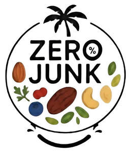

Trade Mark Journal No.2025/044 31 October 2025
UK00004280246 18 October 2025 (29,31)

- Class 29
- Dates; Dried dates; Candied nuts; Dried nuts; Nuts being dried; Roasted nuts; Spiced nuts; Roast nuts; Cashew nuts (Prepared -); Blanched nuts; Ground nuts; Flavoured nuts; Salted nuts; Mixtures of fruit and nuts; Candied pine nuts; Flavored nuts; Processed dates; Dates, processed; Prepared macadamia nuts; Shelled nuts; Processed nuts; Preserved nuts; Nuts being preserved; Nuts being cooked; Processed betel nuts; Edible nuts; Prepared nuts; Nuts, prepared; Pastes made from nuts; Prepared pine nuts; Butter made of nuts; Seasoned nuts; Snack foods based on nuts; Processed tiger nuts; Candied walnuts; Prepared torreya nuts; Processed fruits, fungi, vegetables, nuts and pulses; Nut toppings; Cashew nut butter; Raisins; Nut oils; Chocolate nut butter; Butter (Chocolate nut -); Snack mixes consisting of dehydrated fruit and processed nuts; Powdered nut butters; Snack mixes consisting of processed fruits and processed nuts; Nut oils for food; Olives stuffed with almonds; Nut and seed-based snack bars; Prepared walnuts; Walnuts, prepared; Nut paste spreads; Salted cashews; Processed walnuts; Organic nut and seed-based snack bars; Ground almonds; Almonds, ground; Candied fruits; Roasted peanuts; Milk of almonds for culinary purposes; Prepared almonds; Almonds (Prepared -); Candied fruit snacks.
- Class 31
- Raw dates; Nuts [fruits]; Unprocessed dates; Kola nuts; Raw nuts; Fresh dates; Dates, fresh; Fresh Brazil nuts; Fresh cashew nuts; Fresh pistachio nuts; Nuts being fresh; Fresh nuts; Fresh ginkgo nuts; Fresh gingko nuts; Unprocessed nuts; Nuts, unprocessed; Cola nuts; Betel nuts, fresh; Fresh pine nuts; Fresh cola nuts; Fresh tiger nuts; Edible nuts [unprocessed]; Almonds [fruits]; Raw nut kernels; Fresh fruits, nuts, vegetables and herbs; Animal foodstuffs in the form of nuts; Hazelnuts; Fresh walnuts; Fresh almonds; Raw apricots; Fresh pecans.
RAZAATRADERS LIMITED